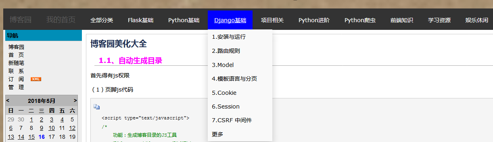
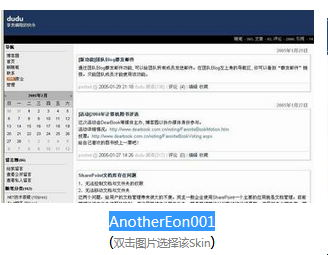
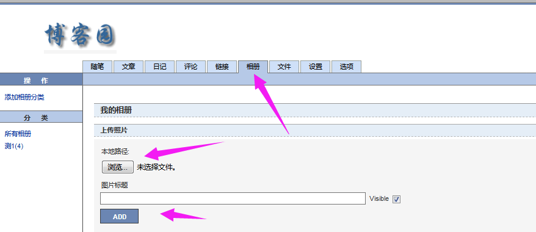
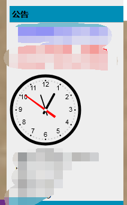

自定义导航栏。
效果如下：

我的博客皮肤用的是AnotherEon001,假如你的博客用的是其它皮肤，样式需要自己修改，要想达到一样的效果，建议也用同款皮肤

（1）把默认的导航栏给隐藏掉
既然我们想要自定义导航栏，默认的导航栏就不能显示
#header{display:none;}（2）页首html代码
里面一个ul包含很多div（一个div代表一个分类），div里面是下拉框（a标签，里面是你的博客文章地址），自己可以随意增加删除分类。
<p style="text-align: center;font-size:35px;margin-bottom:19px;margin-top:20px;opacity: 0.5">Zhang_derek</p>
<div id="test33" >
<ul style="margin-left:0px;margin-right: 0px;" class="test11" >
<div class="dropdown">
<a href="https://www.cnblogs.com/" class="dropbtn"><span style="22px;opacity: 0.2;font-size: 18px" >博客园</span></a>
<div class="dropdown-content">
</div>
</div>
<div class="dropdown">
<a href="http://www.cnblogs.com/derek1184405959/" class="dropbtn"><span style="opacity: 0.2;font-size: 18px" >我的首页</span></a>
<div class="dropdown-content">
</div>
</div>
<div class="dropdown">
<a href="#" class="dropbtn">全部分类</a>
<div class="dropdown-content">
<a class="menu" href="http://www.cnblogs.com/derek1184405959/category/1131360.html" >1.Python基础</a>
<a class="menu" href="http://www.cnblogs.com/derek1184405959/category/1214771.html" >2.Django基础</a>
<a class="menu" href="http://www.cnblogs.com/derek1184405959/category/1174868.html" >3.Django项目</a>
<a class="menu" href="http://www.cnblogs.com/derek1184405959/category/1192235.html" >4.REST framework</a>
<a class="menu" href="http://www.cnblogs.com/derek1184405959/category/1206098.html" >5.CRM客户关系管理</a>
<a class="menu" href="http://www.cnblogs.com/derek1184405959/category/1214770.html" >6.前端</a>
<a class="menu" href="https://cuiqingcai.com/" >7.数据库</a>
<a class="menu" href="http://www.cnblogs.com/derek1184405959/category/1212517.html" >8.python进阶</a>
<a class="menu" href="http://www.cnblogs.com/derek1184405959/category/1214774.html" target="_Blank">9.数据库</a>
<a class="menu" href="http://www.cnblogs.com/derek1184405959/category/1163820.html" target="_Blank">10.爬虫</a>
</div>
</div>
<div class="dropdown">
<a href="http://www.cnblogs.com/derek1184405959/" class="dropbtn">Flask基础</span></a>
<div class="dropdown-content">
<a class="menu" href="http://www.cnblogs.com/derek1184405959/p/9027171.html" >1.快速入门</a>
<a class="menu" href="http://www.cnblogs.com/derek1184405959/p/9028895.html" >2.请求扩展和数据库连接池</a>
<a class="menu" href="http://www.cnblogs.com/derek1184405959/p/9031618.html" >3.信号和wtforms</a>
<a class="menu" href="http://www.cnblogs.com/derek1184405959/p/9032613.html" >4.SQLAlchemy</a>
</div>
</div>
<div class="dropdown">
<a href="#" class="dropbtn">Python基础</a>
<div class="dropdown-content">
<a class="menu" href="http://www.cnblogs.com/derek1184405959/p/8041517.html" target="_Blank">1.简介</a>
<a class="menu" href="http://www.cnblogs.com/derek1184405959/p/8041926.html" target="_Blank">2.数据类型</a>
<a class="menu" href="http://www.cnblogs.com/derek1184405959/p/8042679.html" target="_Blank">3.文件操作</a>
<a class="menu" href="http://www.cnblogs.com/derek1184405959/p/8043411.html" target="_Blank">4.迭代器生成器装饰器</a>
<a class="menu" href="http://www.cnblogs.com/derek1184405959/p/8044289.html" target="_Blank">5.函数</a>
<a class="menu" href="http://www.cnblogs.com/derek1184405959/p/8065488.html" target="_Blank">6.内置函数</a>
<a class="menu" href="http://www.cnblogs.com/derek1184405959/p/8078948.html" target="_Blank">7.常用模块</a>
<a class="menu" href="http://www.cnblogs.com/derek1184405959/category/1131360.html" target="_Blank">更多</a>
</div>
</div>
<div class="dropdown">
<a href="#" class="dropbtn">Django基础</a>
<div class="dropdown-content">
<a class="menu" href="http://www.cnblogs.com/derek1184405959/p/8338229.html" target="_Blank">1.安装与运行</a>
<a class="menu" href="http://www.cnblogs.com/derek1184405959/p/8351759.html" target="_Blank">2.路由规则</a>
<a class="menu" href="http://www.cnblogs.com/derek1184405959/p/8377735.html" target="_Blank">3.Model</a>
<a class="menu" href="http://www.cnblogs.com/derek1184405959/p/8421195.html" target="_Blank">4.模板语言与分页</a>
<a class="menu" href="http://www.cnblogs.com/derek1184405959/p/8442120.html" target="_Blank">5.Cookie</a>
<a class="menu" href="http://www.cnblogs.com/derek1184405959/p/8445045.html" target="_Blank">6.Session</a>
<a class="menu" href="http://www.cnblogs.com/derek1184405959/p/8445842.html" target="_Blank">7.CSRF 中间件</a>
<a class="menu" href="http://www.cnblogs.com/derek1184405959/category/1214771.html" target="_Blank">更多</a>
</div>
</div>
<div class="dropdown">
<a href="#" class="dropbtn">项目相关</a>
<div class="dropdown-content">
<a class="menu" href="http://www.cnblogs.com/derek1184405959/p/8712206.html" target="_Blank">1.REST framework 源码分析</a>
<a class="menu" href="http://www.cnblogs.com/derek1184405959/p/8567522.html" target="_Blank">2.用户注册和登录系统</a>
<a class="menu" href="http://www.cnblogs.com/derek1184405959/p/8590360.html" target="_Blank">3.在线教育平台</a>
<a class="menu" href="http://www.cnblogs.com/derek1184405959/p/8733194.html" target="_Blank">4.生鲜超市</a>
<a class="menu" href="http://www.cnblogs.com/derek1184405959/category/1206098.html" target="_Blank">5.CRM客户关系管理
</a>
<a class="menu" href="http://www.cnblogs.com/derek1184405959/category/1215982.html" target="_Blank">6.Flask构建微电影
</a>
<a class="menu" href="http://www.cnblogs.com/derek1184405959/category/1174868.html" target="_Blank">更多</a>
</div>
</div>
<div class="dropdown">
<a href="#" class="dropbtn">Python进阶</a>
<div class="dropdown-content">
<a class="menu" href="http://www.cnblogs.com/derek1184405959/p/9005830.html" target="_Blank">1.魔法函数</a>
<a class="menu" href="http://www.cnblogs.com/derek1184405959/p/9011453.html" target="_Blank">2.深入类和对象</a>
<a class="menu" href="http://www.cnblogs.com/derek1184405959/category/1212517.html" target="_Blank">更多</a>
</div>
</div>
<div class="dropdown">
<a href="#" class="dropbtn">Python爬虫</a>
<div class="dropdown-content">
<a class="menu" href="http://www.cnblogs.com/derek1184405959/p/8448875.html" target="_Blank">1.urllib和urllib2</a>
<a class="menu" href="http://www.cnblogs.com/derek1184405959/p/8449159.html" target="_Blank">2.Opener和Requests</a>
<a class="menu" href="http://www.cnblogs.com/derek1184405959/p/8449682.html" target="_Blank">3.XPATH和BeautifulSoup4</a>
<a class="menu" href="http://www.cnblogs.com/derek1184405959/p/8449923.html" target="_Blank">4.利用多线程爬虫</a>
<a class="menu" href="http://www.cnblogs.com/derek1184405959/p/8450130.html" target="_Blank">5.Selenium模拟用户操作</a>
<a class="menu" href="http://www.cnblogs.com/derek1184405959/p/8450342.html" target="_Blank">6.Scrapy框架原理介绍</a>
<a class="menu" href="http://www.cnblogs.com/derek1184405959/p/8450457.html" target="_Blank">7.Spider类</a>
<a class="menu" href="http://www.cnblogs.com/derek1184405959/category/1163820.html" target="_Blank">更多</a>
</div>
</div>
<div class="dropdown">
<a href="#" class="dropbtn">前端知识</a>
<div class="dropdown-content">
<a class="menu" href="http://www.cnblogs.com/derek1184405959/p/8313575.html" target="_Blank">1.HTML</a>
<a class="menu" href="http://www.cnblogs.com/derek1184405959/p/8322341.html" target="_Blank">2.CSS</a>
<a class="menu" href="http://www.cnblogs.com/derek1184405959/p/8324589.html" target="_Blank">3.Javascript</a>
<a class="menu" href="http://www.cnblogs.com/derek1184405959/p/8324860.html" target="_Blank">4.Dom</a>
<a class="menu" href="http://www.cnblogs.com/derek1184405959/p/8331168.html" target="_Blank">5.Jquery</a>
<a class="menu" href="http://www.cnblogs.com/derek1184405959/p/8331789.html" target="_Blank">6.Jquery实例</a>
<a class="menu" href="http://www.cnblogs.com/derek1184405959/p/8447397.html" target="_Blank">7.Ajax</a>
<a class="menu" href="http://www.cnblogs.com/derek1184405959/category/1214770.html" target="_Blank">更多</a>
</div>
</div>
<div class="dropdown">
<a href="#" class="dropbtn">学习资源</a>
<div class="dropdown-content">
<a class="menu" href="https://docs.djangoproject.com/en/2.0/" target="_Blank">1.Django2.0官网</a>
<a class="menu" href="http://www.django-rest-framework.org/" target="_Blank">2.REST framework官网</a>
<a class="menu" href="http://docs.jinkan.org/docs/flask/" target="_Blank">3.Flask文档</a>
<a class="menu" href="http://www.runoob.com/bootstrap/bootstrap-tutorial.html" target="_Blank">4.Bootstrap教程</a>
<a class="menu" href="http://blog.didiaoyuan.com/2017/04/18/%E6%80%BB%E6%9C%89%E4%BD%A0%E8%A6%81%E7%9A%84%E7%BC%96%E7%A8%8B%E4%B9%A6%E5%8D%95(GitHub)/" target="_Blank">5.总有你要的书单</a>
<a class="menu" href="http://www.pythondoc.com" target="_Blank">6.python中文学习大本营</a>
<a class="menu" href="https://cuiqingcai.com/" target="_Blank">7.爬虫学习博客</a>
<a class="menu" href="http://www.pythondoc.com/flask-mega-tutorial/index.html" target="_Blank">8.The Flask Mega-Tutorial </a>
<a class="menu" href="http://ondras.zarovi.cz/sql/demo/" target="_Blank">9.表设计工具 </a>
<a class="menu" href="http://flask.pocoo.org/extensions/" target="_Blank">10.Flask extensions</a>
</div>
</div>
<div class="dropdown">
<a href="#" class="dropbtn">娱乐休闲</a>
<div class="dropdown-content">
<a class="menu" href="https://weibo.com/" target="_Blank">1.微博</a>
<a class="menu" href="http://720yun.com/" target="_Blank">2.全景图片欣赏</a>
<a class="menu" href="http://yingyu.xdf.cn/list_907_1.html" target="_Blank">3.双语阅读</a>
<a class="menu" href="http://china.nba.com/" target="_Blank">4.NBA</a>
<a class="menu" href="https://www.toutiao.com/" target="_Blank">5.今日头条</a>
<a class="menu" href="https://tieba.baidu.com/f?kw=%C4%DA%BA%AD%B6%CE%D7%D3&fr=ala0&tpl=5" target="_Blank">6.内涵段子</a>
</div>
</div>
</ul>
</div>
（3）页面定制css
#test33 ul {
margin: 0;
padding: 0;
list-style-type: none; /*去除li前的标注*/
background-color: #333;
overflow: hidden; /*隐藏溢出的部分，保持一行*/
}
#test33 li {
float: left; /*左浮动*/
}
#test33 li a, .dropbtn {
display: inline-block; /*设置成块*/
color: white;
text-align: center;
text-decoration: none;
padding: 14px 16px;
}
#test33 li a:hover, .dropdown:hover .dropbtn { /*鼠标移上去，改变背景颜色*/
background-color: blue;
}
#test33 .dropdown {
/*display:inline-block将对象呈递为内联对象，但是对象的内容作为块对象呈递。旁边的内联对象会被呈递在同一行内，允许空格。*/
display: inline-block;
}
#test33 .dropdown-content {
display: none;
position: absolute;
background-color: #f9f9f9;
min-width: 160px;
box-shadow: 0px 8px 16px 0px rgba(0,0,0,0.2);
}
#test33 .dropdown-content a {
display: block;
color: black;
padding: 8px 10px;
text-decoration:none;
}
#test33 .dropdown-content a:hover {
background-color: #a1a1a1;
}
#test33 .dropdown:hover .dropdown-content{
display: block;
}
给自己的博客设置一个好看的背景图片
（1）首先在设置---->>>相册里面添加一张背景图片

（2）页面定制css代码
background-image里面的地址就是你相册里面添加的图片地址
body {
background-color: #efefef;
background-image:url(http://images.cnblogs.com/cnblogs_com/today-happy/1214264/t_blog.jpg);
background-repeat: no-repeat;
background-attachment: fixed;
background-position: center 0;
background-size: cover;
padding-top:0px;
}
上一篇介绍了添加时钟，但是又发现了一个更好看的时钟，就分享给大家了，效果如下：

（1）公告栏里面
时钟的宽高按可以自己设置合适的大小
<div id="clockdiv">
<canvas id="dom" width="120" height="120">时钟canvas</canvas>
</div>
<script type="text/javascript" src="https://files.cnblogs.com/files/siwuxie095/clock.js"></script>（2）页面定制css代码
/*公告栏时钟*/
#clockdiv {
text-align: left;
}